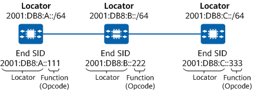
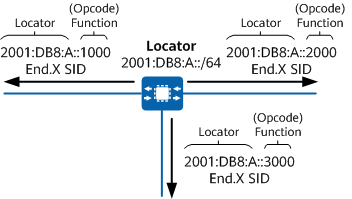
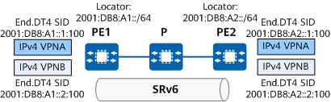
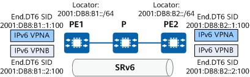

The Locator part provides the location function, and each locator value is generally unique in an SR domain. However, in certain scenarios, such as when anycast protection is configured, multiple devices may be configured with the same locator value. After a locator value is configured for a node, the system generates a locator route and propagates the route throughout the SR domain using an IGP, allowing other nodes to locate that node based on the received route. In addition, all SRv6 SIDs advertised by that node are reachable through the route.
The Function part identifies an instruction pre-defined on the node that generates the SRv6 SID and is used to instruct the node to perform the corresponding operation.
The optional Arguments field can be divided from the Function part. In this case, the SRv6 SID is expressed in the Locator:Function:Arguments format. The Arguments part occupies the least significant bits of the IPv6 address and is used to define relevant information, such as packet flow and service information.
The Function and Arguments parts can both be defined, resulting in an SRv6 SID structure that improves network programmability.
There are a wide range of SRv6 SIDs associated with different functions.
An End SID is an endpoint SID that identifies a destination node.
An End SID is propagated to other nodes through an IGP. It is globally visible but only locally effective.

An End.X SID is a Layer 3 cross-connect endpoint SID that identifies a link.
An End.X SID is propagated to other nodes through an IGP. It is globally visible but only locally effective.

An End.DT4 SID is a provider edge (PE)-specific endpoint SID that identifies an IPv4 VPN instance. The instruction bound to the End.DT4 SID is to decapsulate packets and search the routing table of the corresponding IPv4 VPN instance for packet forwarding. The End.DT4 SID is equivalent to an IPv4 VPN label and used in EVPN L3VPNv4 scenarios.
An End.DT4 SID can be either manually configured or automatically allocated by BGP within the dynamic SID range of the specified locator.

An End.DT6 SID is a PE-specific endpoint SID that identifies an IPv6 VPN instance. The instruction bound to the End.DT6 SID is to decapsulate packets and search the routing table of the corresponding IPv6 VPN instance for packet forwarding. The End.DT6 SID is equivalent to an IPv6 VPN label and used in EVPN L3VPNv6 scenarios.
An End.DT6 SID can be either manually configured or automatically allocated by BGP within the dynamic SID range of the specified locator.

An End.OP SID (OAM endpoint with punt) is an OAM SID that specifies the punt behavior to be implemented for OAM packets. This SID is mainly used in ping/tracert scenarios. On the network shown in Figure 6, if ingress node A attempts to ping the End.X SID 2001:DB8:A4::45 between nodes D and E through the End.X SID 2001:DB8:A2::23, node D needs to process and respond to the ICMPv6 Echo Request packet sent by node A. When constructing the ping packet, node A needs to insert the End.OP SID 2001:DB8:A4::1 of node D into the packet. After receiving the packet, node D finds that the destination address of the packet is its own End.OP SID. Then, node D checks whether 2001:DB8:A4::45 is its local SID. If yes, node D returns a ping success packet. If not, node D reports an error indicating that the SID is not its local SID.